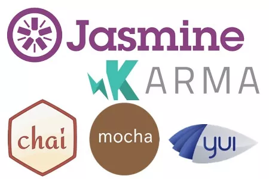

TestX/Testla
Futuristic JavaScript Testing With AVA
Me - Reiss Jarvis
- Software Developer @ eTech
- Javascript & Node
- Angular
- @reissefer
- @reissjarvis
- reissjarvis.co.uk
What is AVA JS
What is AVA JS

What is AVA JS


What is AVA JS
- Minimal and fast
- Runs tests concurrently
- Enforces writing atomic tests
- Very opinionated
- Supports TypeScript
- Supports Tap Reporter
import test from 'ava';
test('arrays are equal', t => {
t.deepEqual([1, 2], [1, 2]);
});
The Usual
- Before and after (With Context)
- Supports callbacks/promises/async-await/observables
- Usual array of asserts (deepEqual, is, truthy, falsey)
- Supports Snapshot testing introduced by jest
Context
test.before(t => {
t.context = 'unicorn';
});
test('context is unicorn', t => {
t.is(t.context, 'unicorn');
});
Magic Asserts
Adds clean diffs for actual and expected
Matching
Run tests only with matching titles
ava --match='*foo'
Plans
Plan how many assertions should be called
t.plan(3);
.only, .skip, .todo and .failing
- .only will only run that test - great for development
- .skip will skip that test
- .todo will mock out tests that need to be written
- .failing will mark the test as an expected fail and wont break the build
they really mean....
- .only for when you dont care about other tests
- .skip when you cant be bothered to fix the test and see if anyone will notice
- .todo to show there was an attempt
- .failing to acknowledge you have broken it but you don't care
Macros
Additional arguments passed to the test declaration will be passed to the test implementation. This is useful for creating reusable test macros
Snapshots
Jest Snapshot- Assert against a file.
- Update when code changes / structure (run manually)
- Controversial (maybe)
Mocha vs AVA load testing
Thanks for listening
-
Links
- AVA Github
- RxJs Github